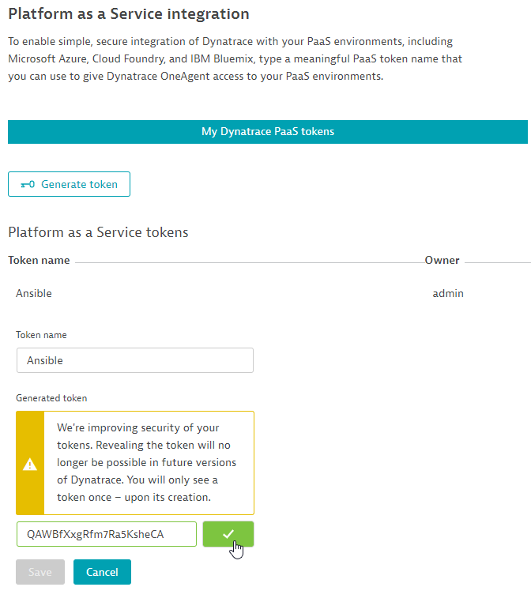
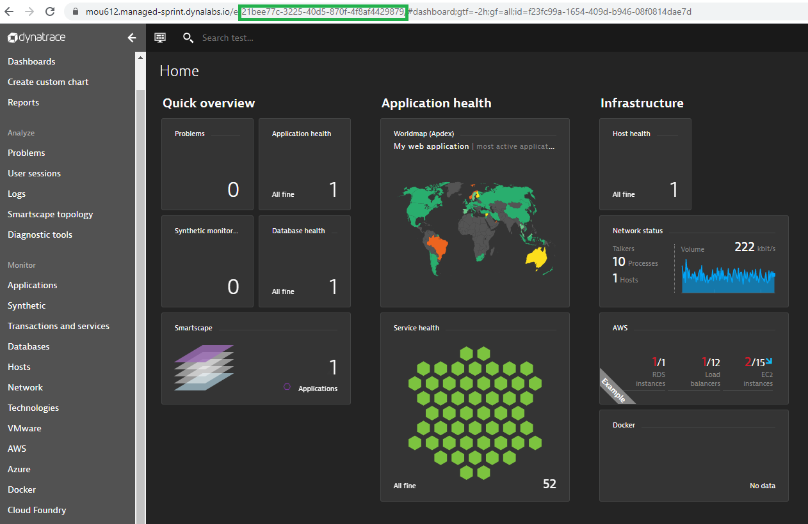
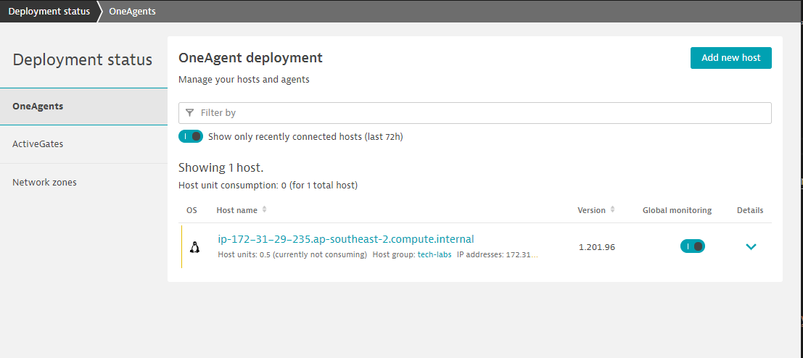
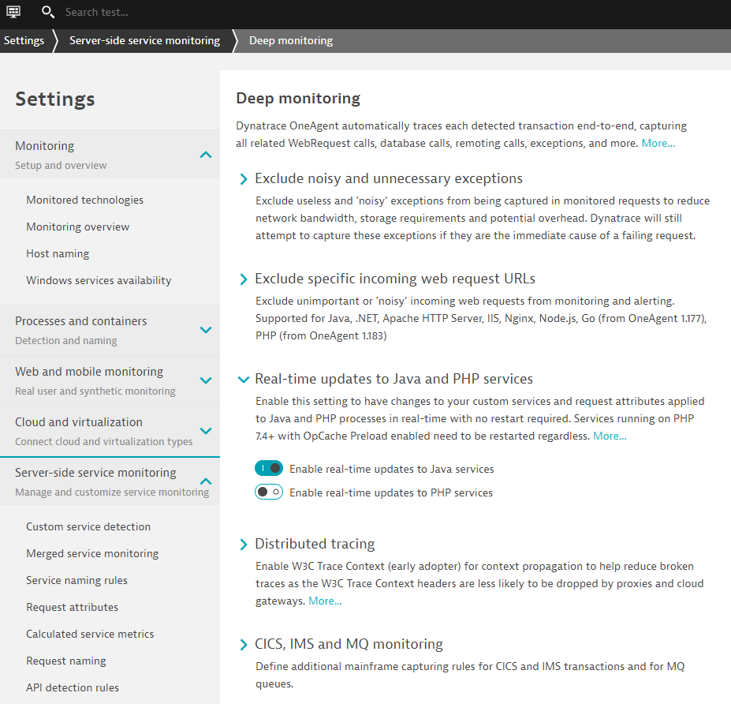
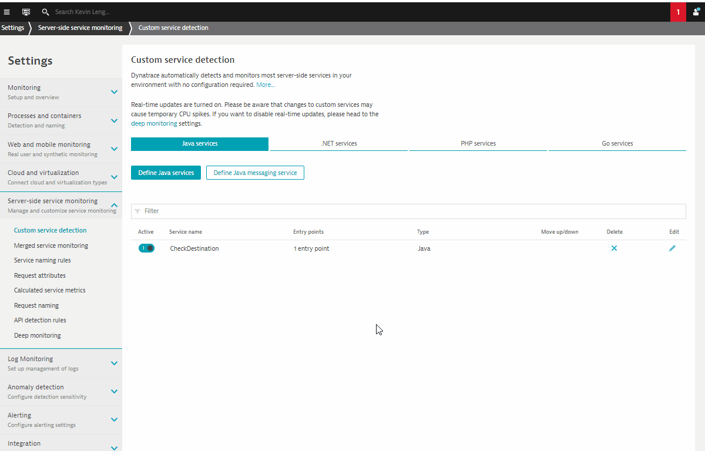
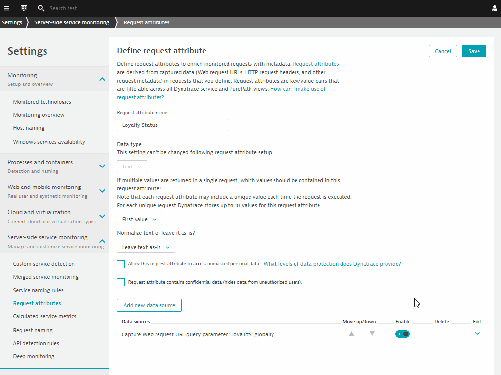
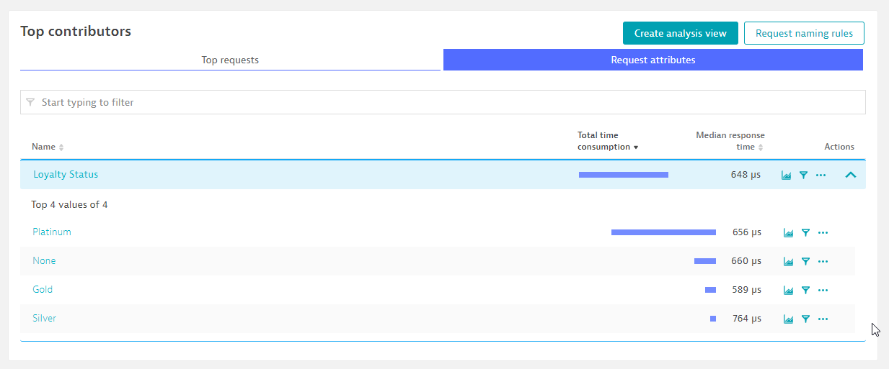
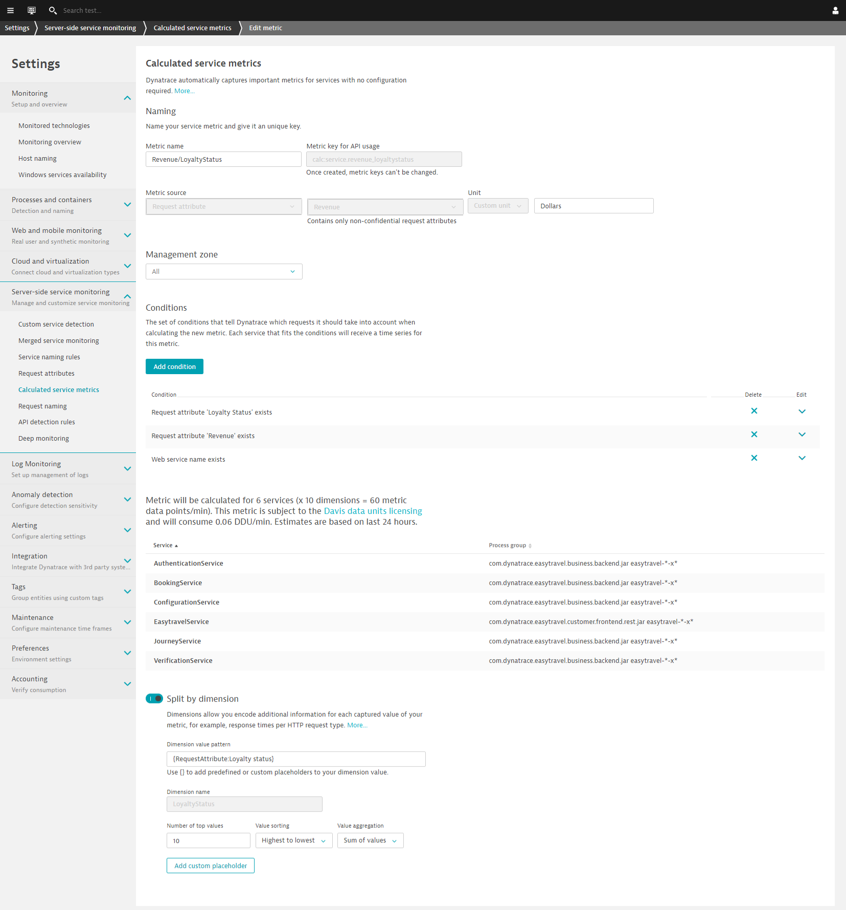
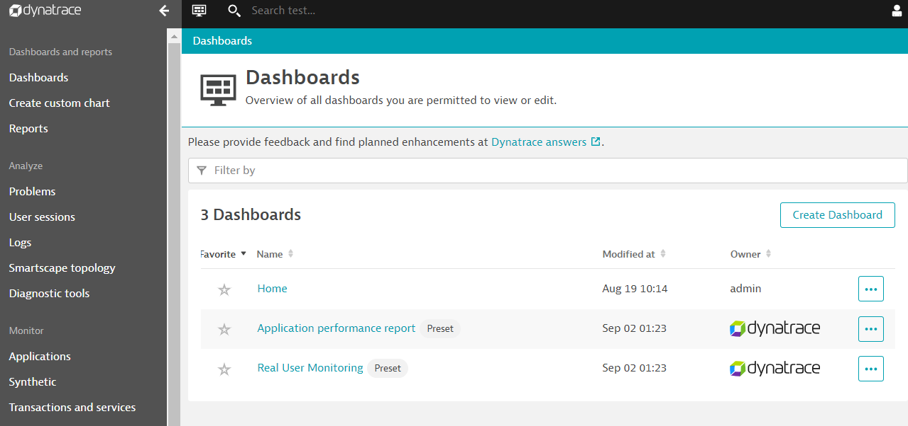
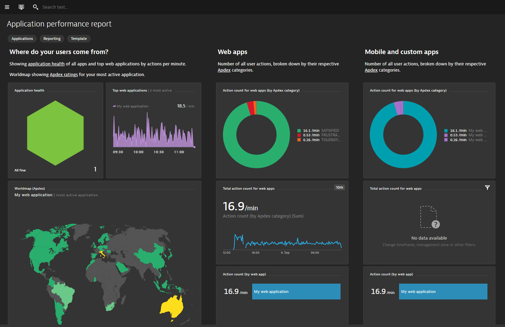

This repository contains the hands on for the Advanced Observability Workshop.
Prerequisites
- Dynatrace SaaS/Managed Account. Get your free SaaS trial here.
- AWS account, with the ability to create an EC2 instance from a public AMI. Signup to a free trial here.
- Chrome Browser
- SSH client such as mobaxterm.
Lab Setup
The following steps are used for this lab:
-
Sample Application
- Sample App is based on easyTravel
What You'll Learn
- Install OneAgent using Ansible CLI
- Learn Request Attributes for deep code level capture
- Learn Session Properties for advanced dashboarding
- Learn Metric Ingestion for automated baselines across all entities
In this exercise, we will deploy the OneAgent to a Linux instance via Ansible.
Based off our Dynatrace Ansible Github, you can rollout Dynatrace Oneagent easily across on Linux and Windows Operating Systems with different available configurations and ensures the OneAgent service maintains a running state. It also provides the tasks to interact with the various OneAgent configuration files.
Adapting from an Ansible example, we will be installing that on our host. Other Ansible playbooks examples can be seen here
Installing Ansible
Use the command below to setup Ansible in your Linux host
wget -O- https://raw.githubusercontent.com/Dynatrace-APAC/Workshop-Advanced-Observability/master/setup_ansible.sh | bash
Positive:Once it's finished, run the following command to check the status of ansible ansible --version
You should see that it's successfully installed along with it's dependencies
ansible 2.9.13
config file = /etc/ansible/ansible.cfg
configured module search path = [u'/home/advanced-observability-workshop/.ansible/plugins/modules', u'/usr/share/ansible/plugins/modules']
ansible python module location = /usr/lib/python2.7/dist-packages/ansible
executable location = /usr/bin/ansible
python version = 2.7.17 (default, Jul 20 2020, 15:37:01) [GCC 7.5.0]
Download the Ansible playbook
Use the command below to setup Ansible in your Linux host
wget https://raw.githubusercontent.com/Dynatrace-APAC/Workshop-Advanced-Observability/master/dt-oneagent-install-linux.yml
Using the commandmore dt-oneagent-install-linux.yml, we can explore the file to preview the necessary variables that we need to provide. For the purposes of the lab, we will use only be using Ansible to rollout on a host. But in a real world context, you can run the playbook across multiple hosts or environments.
# dynatrace oneagent install on linux
# hosts_group -> inventory group of hosts to execute playbook on
# dt_api_endpoint -> dynatrace environment api endpoint (include trailing /)
# dt_api_token -> dynatrace api install token
# dt_host_group -> dynatrace host group name
# dt_app_log_content_access -> flag to enable or disable log analytics on host (0 or 1)
# dt_infra_only -> flag to set cloud infrastructure monitoring mode on host (0 or 1)
---
-
hosts: localhost
name: "dynatrace oneagent install on linux"
tasks:
-
name: "validate ansible execution on linux with sudo access"
shell:
cmd: ls /opt
become: yes
changed_when: False
# Check the latest available OneAgent version
-
Creating the PaaS Token
Go to Settings > Integration > Platform as a Service
Click on Generate token and give a token name eg. Ansible
Click on Generate and copy the token by selecting Reveal token to use for the next step.

Running the playbook
Using the command below, make changes to the dt_api_token and dt_api_endpoint variables. You can tweak the command with a text editor eg. Notepad++
EXAMPLE
ansible-playbook \
-e dt_api_token=<PAAS-TOKEN> \
-e dt_host_group=tech-labs \
-e dt_app_log_content_access=1 \
-e dt_infra_only=0 \
-e dt_api_endpoint=https://mou612.managed-sprint.dynalabs.io/e/<DT-ENV>/api/v1/ \
dt-oneagent-install-linux.yml
Paste the command into your terminal window and tweak the dt_api_token and dt_api_endpoint variables. Replace from token you copied earlier. You can get your from within the Dynatrace environment from the browser.

OUTPUT EXAMPLE
PLAY [dynatrace oneagent install on linux] ********************************************************************************************************************
TASK [Gathering Facts] ****************************************************************************************************************************************
ok: [localhost]
TASK [validate ansible execution on linux with sudo access] ***************************************************************************************************
ok: [localhost]
TASK [get latest oneagent version from dynatrace environment api] *********************************************************************************************
ok: [localhost]
TASK [set oneagent latest version fact (dt_latest_version)] ***************************************************************************************************
ok: [localhost]
TASK [check if oneagent is already installed] *****************************************************************************************************************
ok: [localhost]
TASK [check installed oneagent version] ***********************************************************************************************************************
skipping: [localhost]
TASK [set oneagent current version fact (dt_current_version)] *************************************************************************************************
skipping: [localhost]
TASK [debug output current version] ***************************************************************************************************************************
skipping: [localhost]
TASK [debug output latest version] ****************************************************************************************************************************
ok: [localhost] => {
"dt_latest_version": "1.201.96.20200911-082031"
}
TASK [download oneagent install file] *************************************************************************************************************************
[DEPRECATION WARNING]: Supplying `headers` as a string is deprecated. Please use dict/hash format for `headers`. This feature will be removed in version 2.10.
Deprecation warnings can be disabled by setting deprecation_warnings=False in ansible.cfg.
ok: [localhost]
TASK [install: execute oneagent install file with root privileges] ********************************************************************************************
changed: [localhost]
TASK [update: execute oneagent install file with root privileges] *********************************************************************************************
skipping: [localhost]
TASK [validate oneagent installation] *************************************************************************************************************************
ok: [localhost]
TASK [check host group is correct] ****************************************************************************************************************************
ok: [localhost]
TASK [set current host group fact (dt_current_host_group)] ****************************************************************************************************
ok: [localhost]
TASK [update/correct host group setting if not correct] *******************************************************************************************************
skipping: [localhost]
PLAY RECAP ****************************************************************************************************************************************************
localhost : ok=11 changed=1 unreachable=0 failed=0 skipped=5 rescued=0 ignored=0
Validate the installation
Go to Deployment status on the left navigation. You should see OneAgent installed on the current host.

Like most real world examples, you will find Dynatrace already automatically instrumenting your applications. But for deep code level visibility, you will need to restart those services.
Restart Sample Application
Run the command below to restart the Sample Application Easytravel.
./restart_easyTravel.sh
Explore the Smartscape
While waiting for Easy Travel to start, you can explore Dynatrace and using the Smartscape, Dynatrace will automatically discover the processes and dependencies that comprises the Easy Travel application!
4 things that you will love about Dynatrace!

In this exercise, we will be creating a custom Java service. This is a typical scenerio for 3rd party apps or proprietary software that Dynatrace monitors but doesn't instrument automatically.
Enable Real time updates for Java
Go to Settings > Server-side service monitoring > Deep Monitoring > Real-time updates.

Go to Settings > Server-side service monitoring > custom service detection
Click on Define Java services and use the following:
- Name - Credit Card Verification
- Click on Find entry point
- Select com.dynatrace.easytravel.business.backend.jar
- Search for ipc.SocketNativeApplication
- Use selected class
- Select sendAndReceive method
- Select Finish
- Click on Save

In this exercise, we will cover the setting up Request Attributes. These leveraged for deep visibility into all the details of your users' interactions with your application.
Creating Request Attributes
Go to Settings > Server-side service monitoring > Request Attributes
Click on Define a new request attribute and use the following:
- Request attribute source – Java method parameter(s)
- Click on Select method sources
- Select business.backend
- Search for BookingService
- Select Use the selected class
- Search for checkLoyaltyStatus
- Choose 2:java.lang.String on Capture Drop down
- Click on Save

Validate of Loyalty Status Request Attribute
Go to Transactions and services and filter on AuthenticationService.
Click on View requests and validate the key-value pairs of Loyalty Status under the Request Attribute tab.

In this exercise, we will cover the setting up Calulated Service Metrics with Request Attributes. These leveraged for deep visibility into all the details of your users' interactions with your application.
Define Calculated Service Metric
Go to Settings > Server-side service monitoring > Calculated service metrics
Click on Create new metric and use the following:
- Metric name – Revenue/LoyaltyStatus
- Metric source – Request Attribute
- Request Attribute – Revenue
- Unit - Custom unit
- Text field - Dollars
- Conditions - Request Attribute ‘Loyalty Status' exists
- Conditions - Request Attribute ‘Revenue' exists
- Conditions - Web service name exists
- Toggle - Spilt by dimension
- Dimension value pattern - {RequestAttribute:LoyaltyStatus}
- Dimension name - LoyaltyStatus
You'll be able to preview the various dimensions across defined services

Refer to the left navigation bar and go to Dashboards. Dynatrace has now prebuilt dashboard templates such as Application performance report and Real User Monitoring dashboards.

Drill down into each of these dashboards and explore the various dashboard widgets for App Owners and Business Users.

We hope you enjoyed this lab and found it useful. We would love your feedback!